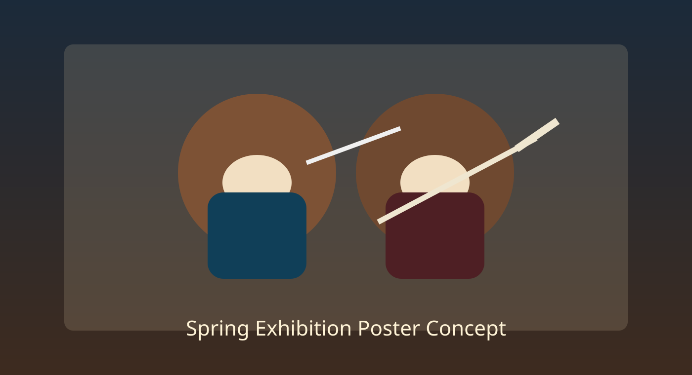

Annual spring demonstration concept art (artist rendition).
Kendo
Kendo channels discipline through precise strikes, sharp footwork, and spirited calls that train body and mind in equal measure. At Yushinkai, we honor the traditional forms while preserving room for laughter whenever someone overcommits to a dramatic men strike.
Naginata
Naginata practice emphasizes distance, timing, and flowing circular motion, building a distinctive rhythm that feels both elegant and formidable. Our naginata sessions focus on clean technique, respectful spirit, and the occasional playful reminder that yes, even bears can pivot gracefully.